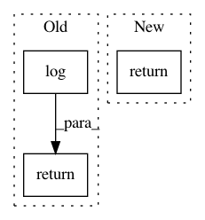

5ec08ed0e16d87c029bc5d9de46b95800d0bc470,texar/losses/mle_losses.py,,smoothing_cross_entropy,#Any#Any#Any#Any#Any#,169
Before Change
// We subtract it just for readability, makes no difference on learning.
normalizing = -(
confidence * tf.log(confidence) + tf.to_float(vocab_size - 1) *
low_confidence * tf.log(low_confidence + 1e-20))
if gaussian and confidence > 0.0:
labels = tf.cast(labels, tf.float32)
normal_dist = tf.distributions.Normal(loc=labels, scale=confidence)
// Locations to evaluate the probability distributions.
soft_targets = normal_dist.prob(
tf.cast(tf.range(vocab_size), tf.float32)[:, None, None, None, None])
// Reordering soft_targets from [vocab_size, batch_size, ?, ?, ?] to match
// logits: [batch_size, ?, ?, ?, vocab_size]
soft_targets = tf.transpose(soft_targets, perm=[1, 2, 3, 4, 0])
else:
soft_targets = tf.one_hot(
tf.cast(labels, tf.int32),
depth=vocab_size,
on_value=confidence,
off_value=low_confidence)
xentropy = tf.nn.softmax_cross_entropy_with_logits(
logits=logits, labels=soft_targets)
return xentropy - normalizing
After Change
cross_entropy_fn = tf.nn.softmax_cross_entropy_with_logits_v2
else:
cross_entropy_fn = tf.nn.softmax_cross_entropy_with_logits
return cross_entropy_fn(
logits=logits, labels=soft_targets)
In pattern: SUPERPATTERN
Frequency: 3
Non-data size: 3
Instances
Project Name: asyml/texar
Commit Name: 5ec08ed0e16d87c029bc5d9de46b95800d0bc470
Time: 2018-05-03
Author: shore@pku.edu.cn
File Name: texar/losses/mle_losses.py
Class Name:
Method Name: smoothing_cross_entropy
Project Name: GPflow/GPflow
Commit Name: 456b9ed099cc5f7e99880371ac9d1924095769f3
Time: 2017-05-26
Author: joachim.vanderherten@ugent.be
File Name: GPflow/transforms.py
Class Name: Log1pe
Method Name: backward
Project Name: GPflow/GPflow
Commit Name: 916458eba3f928893ed4f9bec5bb7e5a2aac94d7
Time: 2018-06-13
Author: st--@users.noreply.github.com
File Name: gpflow/likelihoods.py
Class Name: Likelihood
Method Name: predict_density